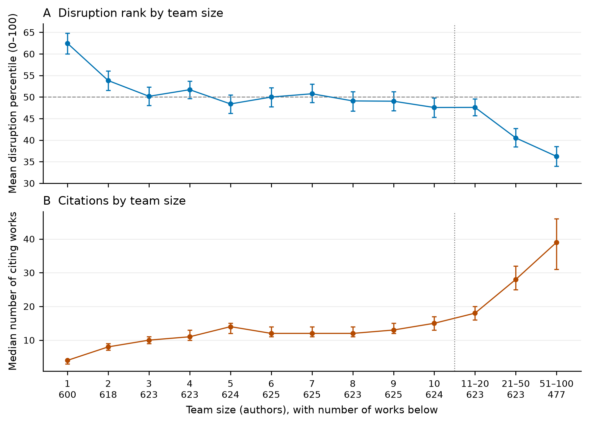
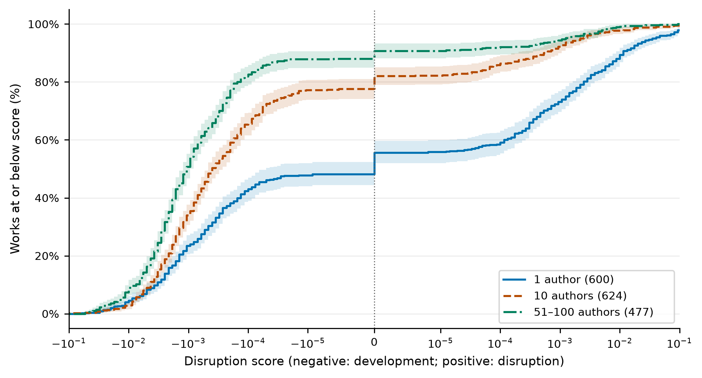
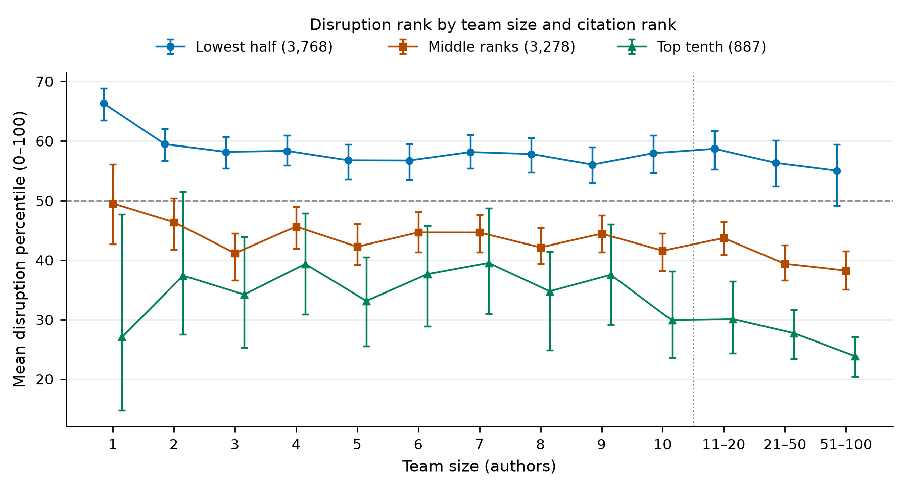
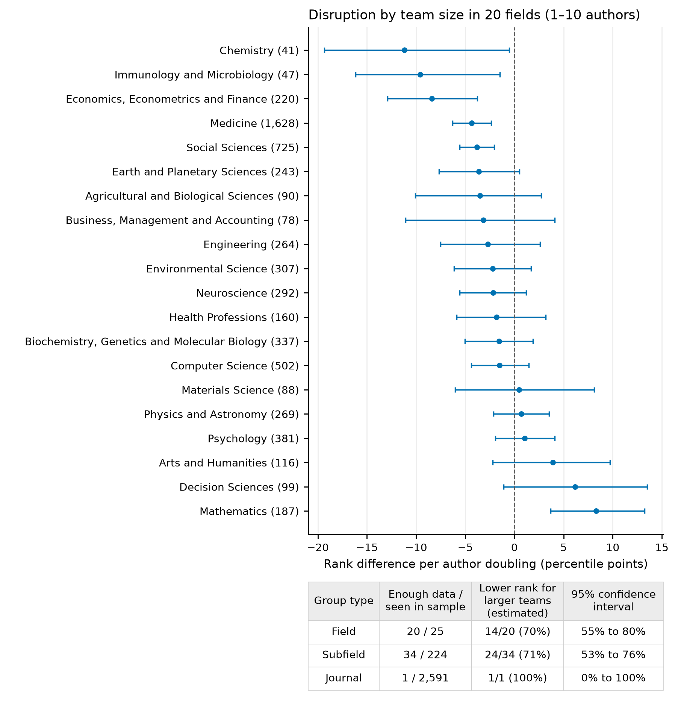
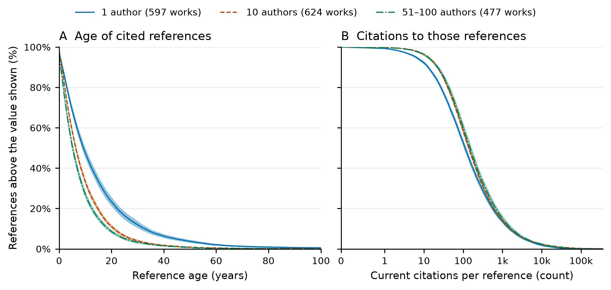

Among sampled Columbia-linked works published from 2021 through 2024 in OpenAlex and cited in the main window, larger teams generally received more citations. A work scores below zero on disruption when more later publications cite it with at least one of its references than cite it without any. Works by larger teams more often scored below zero. Wu, Wang and Evans call this pattern development and the opposite balance disruption. This does not show that adding authors makes work less original. [brief] [T2, T82, F11, F12]
The distribution of disruption scores differed by team size, as in the original study. We ranked works by disruption score within each publication year. Larger teams generally ranked lower, but not at every team size or in every field. Compared with solo works, works with 10 or 51 to 100 authors cited newer and generally more highly cited references. We looked at works cited in the first or second full calendar year after publication. On average, works with 51 to 100 authors received a greater share of those citations in the first full year than solo works did. Larger teams still showed less disruption when we compared works sharing an author, counted citations over a shorter period, or used a simpler score. [brief] [F11, F12, F14, F15, F16, F17, F18, P45]
The decline in disruption rank was clear in the least-cited half. We did not establish the original claim of a steeper decline among the most cited. We could not tell whether disruption ranks for reviews rose or fell with team size. We also could not tell whether very high citation counts became rarer at different rates among references cited by solo and ten-author works. We could not test recognition years later, team growth over decades, company patents or Nobel-winning work. [brief] [T1, F13, F15, F16, F17, F19]
Wu, Wang and Evans asked whether small teams tend to disrupt and large teams tend to develop earlier work. They examined research articles, US patents and GitHub software projects. Team size meant the number of authors, inventors or contributors listed on a work. [brief]
We sampled 8,000 works published from 2021 through 2024 in OpenAlex, a research index. They included articles, reviews and book chapters. Each had an author listing Columbia University or an institution OpenAlex groups under Columbia. For team size, we used the author count stored in our copy of OpenAlex. We randomly sampled works separately at each team size from one to ten and in three ranges: 11 to 20, 21 to 50, and 51 to 100. A work’s sampling weight was the number of eligible works in its group divided by the number we sampled. [T1, T2, T5, T82, P25, J5]
To be eligible for sampling, a work needed a recorded reference other than itself and evidence of a citation in our copy of OpenAlex. We accepted an overall count above zero, an annual count above zero for a later calendar year through 2026, or a link to a citing work published later, even in the same year. [T1, T3, T33, T82, T83, J5]
For the main disruption analysis, we separately checked for a later work citing the sampled work within the citation window. We searched across all of OpenAlex, not just the Columbia sample. The main window ended on 23 November 2026. The shorter window ended on 31 December of the second calendar year after publication. Works from 2024 were excluded from the shorter analysis because their window had not ended. [T32, T33, T82, T84]
To score disruption, sort later works into three groups: those that cite the sampled work without any of its references, those that cite it with at least one of its references, and those that cite one or more of its references but not the sampled work. Count each later work in just one group. Subtract the second count from the first, then divide by the total across all three groups. If all three counts are zero, there is no score. [brief] [T32, T33]
Suppose six later works cite a sampled work without any of its references, two cite both, and eight cite only the references. Subtract two from six and divide four by sixteen: the score is positive one quarter. A negative score means citing the work alongside a reference was more common than citing it without its references. If those counts tie, the score is zero. [brief]
The original study mostly reported percentiles, or ranks, across works. We instead used sampling weights to rank works within each publication year. The main analysis ranks each work among sampled works from its year that were themselves cited during the window being analysed. To get a rank from 0 to 100, add the full weight of works with lower scores and half the weight of works with the same score, including the work itself. Express that sum as a percentage of the total eligible weight for the year. For example, if the total weight is 100, the weight below is 40 and the tied weight is 20, the rank is 50. A high rank need not mean a positive score. [brief] [T66, T67, T84, P25, J15]
For most estimates, we made new samples by drawing from the original sample within each team-size group, allowing the same work to appear more than once. We recalculated the estimate for each new sample. This is called a bootstrap. The middle 95% of the recalculated estimates gives the confidence interval. We did not narrow the intervals to account for how much of each group we had sampled. For a statistic based only on teams of 51 to 100 authors, such as their median citation count, the interval shows variation across repeat draws. There was no uncertainty about which eligible works we picked in that group: we picked them all. [T5, T66, T68, P25]
Larger teams generally ranked lower on disruption and drew more citations. The original study found steadily falling ranks and rising typical citation counts, with the disruption pattern extending to teams of up to 100. [brief] [F11, P25]
For works with one to ten authors, we fitted a trend that estimates the same change in disruption rank for each doubling of team size. It showed a decline of 3.48 rank points per doubling, with a 95% interval of 2.70 to 4.27 points of decline among 6,210 works. [T66, F11, P25]
Figure 1 shows average ranks in panel A and median citation counts in panel B. The median is the citation count at the halfway point after ordering works by citation count and counting each work according to its sampling weight. For 600 solo works it was 4, with a 95% interval of 3 to 4. For 624 ten-author works it was 15, with an interval of 13 to 17. For 477 works with 51 to 100 authors it was 39, with an interval of 31 to 46. [T66, F11, P25]

Partly reproduced. The measures sometimes levelled off or reversed between neighbouring groups. The largest group shows a result for the range, not each size in it. [brief] [F11, P25]
Larger teams more often scored below zero. The original study likewise found that the distribution differed by team size. In Figure 2 each curve shows the share at or below each score. Look just left of zero to exclude exact zeros. [brief] [T67, F12, P30]
The share below zero was 77.6% for ten-author works and 48.2% for solo works. The difference was 29.4 percentage points, with a 95% interval of 24.0 to 34.5 points among 1,224 works. Most scores were close to zero. Solo works tended to rank higher, but only 44.3% scored above zero, with an interval of 40.3% to 48.0% among 600 works. [T66, T67, F12, P30]

Reproduced in this sample. We found a difference in distributions without repeating the original tests. [brief] [T67, F12]
The decline in disruption rank was clear in the least-cited half. The original study reported declines at all citation levels, especially among the most cited. [brief] [T68, F13]
Figure 3 groups works by how often they were cited. We ranked counts of distinct citing works within each publication year using the sampling weights. Tied counts share a rank. On the 0 to 100 citation-rank scale, the least-cited group is below 50, the middle group starts at 50 and stops just before 90, and the top group starts at 90. Because the ranks are weighted, the lowest group need not contain half the sampled works. The fitted changes use works with one to ten authors. [T68, T84, P44]
The least-cited group fell by 2.50 rank points per doubling, with a 95% interval of 1.64 to 3.39 points of decline among 3,277 works. The middle result was inconclusive. The top estimate was a rise of 0.23 points; its interval ran from a decline of 4.33 to a rise of 3.37 points among 457 works. [T68, F13, P44]

Each point shows the average disruption percentile for one team-size and citation group. Each bar gives a separate 95% confidence interval for that average, not for the change with team size. The figure covers 7,933 works with a recorded reference and at least one later work citing them through 23 November 2026. Each work had an author listing Columbia University or an institution that OpenAlex lists under it. A work is more disruptive when later works cite it instead of citing it together with its references. Higher percentiles mean higher disruption relative to works in the sample from the same year. Citation rank compares counts of distinct later citing works among works from that same year. The middle group starts at the 50th percentile and stops just before the 90th. Works less likely to be sampled count more both when setting the groups from those ranks and when calculating the plotted averages. The legend counts each sampled work once, so the lowest half need not contain half of the sampled works. The intervals come from 1,000 repeated draws within each original team-size group. The same work could be drawn more than once, and both ranks and the citation groups were recalculated each time. The dashed line marks the middle of the disruption rank scale. The dotted line separates individual team sizes from ranges. The ranges above ten authors are shown for comparison only.
The estimates of change use teams with 1–10 authors. For each doubling of team size, the rank in the lowest citation group fell by an estimated 2.50 percentile points, with a 95% interval from a fall of 3.39 to a fall of 1.64, based on 3,277 works. In the middle group, the estimate was a fall of 1.22 points, with a 95% interval from a fall of 2.54 to a rise of 0.48, based on 2,476 works. In the top tenth, the estimate was a rise of 0.23 points, with a 95% interval from a fall of 4.33 to a rise of 3.37, based on 457 works. The estimated change was 2.73 points higher in the top tenth than in the lowest half, with a 95% interval from 1.89 points lower to 6.00 points higher, based on 3,734 works [T68]. [P44]
Partly reproduced. Per doubling of team size, the estimated change in rank was 2.73 points higher in the top tenth than in the least-cited half. The 95% interval ranged from 1.89 points lower to 6.00 points higher, based on 3,734 works. We could not establish that the trends differed. [T68, F13]
Most fields and subfields with enough data had downward estimates. The original study found declines across fields and subfields and within most journals. We used the broad and narrow subjects in OpenAlex’s main classification for each work. [brief] [T69, T70, P35]
Figure 4 plots the change per doubling for each field. To qualify, a field, subfield or journal needed at least 30 works with one to ten authors, at least four distinct sizes, and at least five works in each of two ranges: one or two authors, and five to ten. [T69, T70, P35]
Across 20 qualifying fields with 6,074 works in total, 14 fields had estimated declines: 70%, with a 95% interval of 55% to 80%. Across 34 qualifying subfields with 3,601 works in total, 24 had estimated declines: 71%, with an interval of 53% to 76%. These intervals show how the percentage with a decline varied when we recalculated trends for the same fields and subfields in each repeat sample. In many individual groups, the data were also consistent with no change or a rise. [T69, T70, F14, P35, J15]

Partly reproduced for fields and subfields; not testable for most journals. Only Proceedings of the National Academy of Sciences qualified. For its 45 works the estimate was a decline of 2.11 points per doubling, with a 95% interval from a decline of 12.2 to a rise of 7.73. [T69, T70, F14]
Larger teams in Figure 5 cited newer and generally more highly cited sources than solo authors did, as in the original study. We measured popularity using cumulative citation totals from our copy of OpenAlex or from the live index, not totals as of the publication date of the work listing each reference. [brief] [T10, T11, T45, T74, T75, F15, P45]
A reference’s age is the number of years between its publication year and that of the work that cited it. In Figure 5, each reference carries the sampling weight of the work listing it, so longer lists contribute more. For the comparisons below, we instead calculated each work’s average reference age and compared those averages using the sampling weights. Among 1,221 works themselves cited in the main window, references in ten-author works were 5.20 years newer on this measure than in solo works, with a 95% interval of 4.41 to 6.05 years newer. Without requiring a citation to the work itself in the main window, references in ten-author works were 5.38 years newer on this measure than in solo works, with an interval of 4.58 to 6.24 years newer among 1,249 works. [T74, T75, F15, P45]

The works had at least one later work citing them through 23 November 2026. Each had at least one author listing Columbia University or an institution that OpenAlex lists under it. The curves count each reference once per work that lists it. Each link carries that work’s weight, so works less likely to be sampled count more per link, and works with more links contribute more. In order of 1, 10 and 51–100 authors, both panels use 597, 624 and 477 works. Panel A uses 22,001, 34,531 and 43,548 links; panel B uses 22,149, 34,613 and 43,772 [T75]. Reference age is the difference in publication years. Panel A includes same-year references, excludes references published in later years and shows ages through 100 years. Panel B uses current citation totals, not totals at publication. Its scale is linear through one citation and logarithmic above one.
Shading shows sampling uncertainty at each age or citation-count cutoff, not for the curve as a whole. Each 95% confidence interval comes from 1,000 repeated draws within each original team-size group. A work could be picked more than once per draw.
These curves show what we observed. They do not show whether a mathematical model fits. Separate checks ask whether a constant rate of decline describes reference age and whether very highly cited references follow the pattern the original study proposed; neither model fits closely. In the age model, a constant rate means the share of references older than a given age falls by the same fraction with each additional year. In those checks, older references became less common faster for ten-author works than for solo works. The model comparison among references with at least 50 citations was inconclusive [T76, T77]. The original finding was partly reproduced. Compare with Figure 4 of the original study [brief]. [P45]
Partly reproduced. The curves show the references we counted. The age model assumes that raising the age cutoff by one year reduces the share of references older than that cutoff by the same fraction each time. That fraction was larger for works with ten authors than for solo works. The citation model assumes that each doubling of the citation count reduces the predicted share of references with exactly that count by the same fraction. For example, the fraction lost when comparing exactly 50 citations with exactly 100 is the same as when comparing exactly 100 with exactly 200. Among references with at least 50 citations, we could not tell whether that drop differed between solo and ten-author works. Neither model fit closely. [brief] [T76, T77, F15, J12]
We looked at works cited in the first or second full calendar year after publication. On average, works with 51 to 100 authors received a greater share of those citations in the first full year than solo works did. In the original study, large-team work tended to draw attention sooner, while delayed recognition was more common for small-team and disruptive work. [brief] [T32, T78, F16]
We used works from 2021 through 2023. For each work, we calculated the share of its citations in those two full years that arrived in the first. We then averaged those shares using the sampling weights. The average was 5.23 percentage points higher for works with 51 to 100 authors than for solo works. The 95% interval was 0.94 to 9.38 points higher, based on 688 works. The ten-author comparison was inconclusive. [T32, T78, F16]
For each work, we also counted citations from the day after publication through the end of the second full calendar year. We calculated what share of its citations in that period arrived in its publication year. We compared works with negative and positive disruption scores in the main citation window as if both groups had the same mix of publication years and quarters. The average publication-year share was 2.14 percentage points larger for negative scores, with a 95% interval of 1.04 to 3.19 points among 5,421 works. Among citations in the first two full calendar years, the groups did not clearly differ in the share received in the first year. Some of the same citations helped determine both the disruption score and when attention arrived. [T32, T78, F16]
Partly reproduced. The largest teams had a higher average first-year share. Neither measure tests recognition after years of little attention. [F16]
Larger teams still ranked lower when we compared works that shared a qualifying author. The original study found that the link mostly remained after accounting for year, topic and author, and appeared across types of work. [brief] [T79, F17]
We used teams of one to ten. An author qualified if they listed a Columbia affiliation on at least two works with different team sizes that were themselves cited in the main window. A work entered once for each qualifying author, with its sampling weight divided among those entries. For each qualifying author, we compared the disruption ranks of their works with different team sizes. We allowed average ranks to differ by publication year and by the main topic OpenAlex assigned to each work. Among 4,107 works, each doubling was associated with a rank 1.85 points lower, with a 95% interval of 0.27 to 3.43 points of decline. The unadjusted estimate uses the same works but does not account for author, year or topic. It does not compare works by the same author. It showed a decline of 1.73 points, with an interval of 0.46 to 3.01 points of decline. These intervals account for works sharing an author and works counted under several authors, without resampling. [T79, T80, F17, J12]
Partly reproduced. The decline persisted after adjustment. In this subset, the unadjusted decline of 1.73 points per doubling was already smaller than the 3.48 points in the full analysis of works with one to ten authors. [T66, T79, F11, F17]
In a separate comparison by type, ranks fell among works OpenAlex classified as articles. We could not tell whether reviews ranked higher or lower as team size grew, whether we required a citation to the review itself or also included reviews with citations only to their references. Under the first rule, we could not tell whether the trends for articles and reviews differed. Under the broader rule, the estimated decline was steeper for articles, but the interval for the difference only just excluded zero. [T81, F17]
The original study found the link held across several windows and scoring rules. [brief] For the window comparison, we took all 5,671 works cited in both windows. We ranked them within each publication year, separately for each window. We then estimated the team-size trend using the 4,405 of those works with one to ten authors. The decline per doubling was 3.01 points in the main window, with a 95% interval of 2.01 to 3.93 points of decline. It was 2.82 points in the shorter window, with an interval of 1.78 to 3.85. The direct comparison did not establish a difference. [T71, T82, T84, F18, J15]
Partly reproduced. For each sampled work, we took the later works that cited it and calculated the percentage that cited none of its references. Among 6,210 works with one to ten authors, that percentage fell by 4.29 points per doubling of team size. The 95% interval was a decline of 3.40 to 5.21 percentage points. Other scores and long windows were not tested. [brief] [T33, T71, F18]
Including works whose references were cited but that were not themselves cited barely changed the main decline in rank with team size. It made the estimated decline steeper in the shorter window. It also changed the result for the difference between article and review trends, as noted above. [F11, F17, F18, T87]
The rank trend differed between works with and without a funding acknowledgment in OpenAlex. The original study also compared funded work and company patents, tracked team sizes over decades and found Nobel-winning papers unusually disruptive. [brief] [T72, F19]
Among 6,210 works with one to ten authors, each doubling of team size was associated with a decline of 3.75 disruption rank points for works without a recorded funding acknowledgment and a rise of 0.52 points for works with one. The data supported the decline but did not establish a rise. The estimated change was 4.26 points higher for works with an acknowledgment, with a 95% interval of 2.68 to 5.83 points higher. [T72, F19]
Original comparisons not testable; local funding records only. Our results describe differences by recorded acknowledgment, not verified funding status. Team growth over decades, company patents and Nobel-winning work were not testable here. [brief] [T1, F19]
| Finding | Original result | Result in this sample |
|---|---|---|
| Team size | Disruption rank fell and typical citations rose steadily, with the disruption pattern extending to larger teams. [brief] | Partly reproduced. Both directions held overall, with exceptions between neighbouring sizes. [F11, P25] |
| Distribution of scores | The distribution changed, not just the average. [brief] | Reproduced in this sample. Larger teams more often scored below zero. [F12, T67, P30] |
| Citation levels | Disruption fell with team size at all citation levels, most sharply among highly cited works. [brief] | Partly reproduced. The decline was clear in the least-cited half but not established at other citation levels. [F13, P44] |
| Fields and journals | The decline appeared across fields and subfields and in most journals. [brief] | Partly reproduced. The decline was common but not universal. Only one journal qualified. [F14, P35] |
| References | Larger teams cited newer and more popular work. How quickly older and highly cited references became rarer differed by team size. [brief] | Partly reproduced. References were newer and generally more cited. The fitted age difference agreed in direction; the citation model comparison was inconclusive. [F15, T76, T77, P45] |
| Timing | Large teams tended to draw earlier attention; delayed recognition was more common for small teams and disruptive works. [brief] | Partly reproduced. The largest teams had a higher average first-full-year share of citations received in the first two full calendar years than solo authors. Long-delayed recognition could not be tested. [F16, T78] |
| Author, year, topic and type | The link remained after accounting for author, year and topic, and appeared across research types. [brief] | Partly reproduced. The decline held when comparing each qualifying author’s works. Reviews were inconclusive. [F17, T79, T81] |
| Other windows and scores | The link held across windows and scoring rules. [brief] | Partly reproduced. The direction held with a shorter window and a simpler score. [F18, T71] |
| Historical and policy context | Team sizes grew over decades, and Nobel-winning papers were unusually disruptive. The study also compared funded work and company patents. [brief] | Original comparisons not testable; local funding records only. We describe differences by recorded acknowledgment, not verified funding status. [T1, T72, F19] |
The short follow-up cannot reveal recognition years later or show whether team sizes grew over decades. We did not test long citation windows or score variants that exclude self-citations, use only popular references or count individual citation links instead of citing works. [brief] [T1, T32, T33, T71, T78, F18, F19]
One university’s research cannot stand in for the original collections of articles, patents and software. We lacked data on company patents and Nobel-winning work. Most journals had too few works across the required range of team sizes. We could not reliably distinguish work about theories from work based on observations or experiments, or verify funding. [brief] [T1, T69, T70, T72, T81, F17, F19]
Disruption measures citations, not whether researchers abandoned an idea. Even within authors, different projects may attract different numbers of collaborators. The results do not show what would happen if a team added an author. [brief] [T32, T33, T79]
The results do not describe all Columbia output. Even within a publication year, earlier works had more time to be cited. OpenAlex’s subjects may differ from the original study’s. [brief] [T1, T33, T69, T82, T83, T84]
The cutoff applies to when citing works were published, not to when OpenAlex recorded their citations. Our counts matched separate counts in the cases checked, but that does not mean OpenAlex recorded every citation. The intervals do not account for index errors or for one later work contributing to several scores. [T15, T24, T25, T32, T33, T66, T79]
Sampling. Of the 55,371 Columbia-linked works in our copy of OpenAlex, 10,720 had no usable reference link and a recorded reference count of zero. None had a positive reference count without a usable link. Another 4,110 lacked citation evidence, leaving 40,541. Of those excluded for references, 3,507 had a positive citation total, 3,188 a later-year count, and 482 a dated later citing work; groups overlap. [T1, T83, F20, J5]
We sorted the OpenAlex work IDs as strings and drew randomly without replacement within groups, using PCG64 with seed 42. The weight is the number listed divided by the number drawn. Works kept those weights after screening. [T2, T5, T82, J5]
| Authors | Listed | Drawn | Work cited: main | Work cited: short | Weight |
|---|---|---|---|---|---|
| 1 | 2,681 | 627 | 600 | 350 | 4.28 |
| 2 | 4,202 | 627 | 618 | 428 | 6.70 |
| 3 | 4,702 | 627 | 623 | 428 | 7.50 |
| 4 | 4,364 | 627 | 623 | 452 | 6.96 |
| 5 | 3,781 | 627 | 624 | 465 | 6.03 |
| 6 | 3,194 | 627 | 625 | 450 | 5.09 |
| 7 | 2,663 | 627 | 625 | 463 | 4.25 |
| 8 | 2,212 | 626 | 623 | 452 | 3.53 |
| 9 | 1,920 | 626 | 625 | 448 | 3.07 |
| 10 | 1,622 | 626 | 624 | 469 | 2.59 |
| 11–20 | 6,370 | 626 | 623 | 474 | 10.18 |
| 21–50 | 2,349 | 626 | 623 | 437 | 3.75 |
| 51–100 | 481 | 481 | 477 | 355 | 1.00 |
| All | 40,541 | 8,000 | 7,933 | 5,671 | — |
Counts are unweighted. [T5, T82, F20]
Windows. In the main window, 64 works had only their references cited and three had no citations to either. The shorter window ended for 6,012 works, excluding 1,988 from 2024. In that window, 339 had only references cited and two had neither the work nor its references cited. Of 5,966 cited in the main window with time for both, 5,671 were cited in both. Admitting references-only cases brings the totals to 7,997 for the main window and 6,010 for the shorter window and direct comparison. [T33, T82, T84, F20]
Count checks. We searched throughout OpenAlex. For the total citing either the sampled work or its references, the batches included the sampled work’s own ID as well as its reference IDs. A citing work counted only in the first batch it matched, even if it cited just the sampled work. [J5, T8] All 62 grouped-count checks, including main and short totals, matched independent counts or classifications from citing works’ reference lists. Reversing batch order left counts unchanged in seven checks. All 122 checked works in one later batch cited a reference from that batch and none from earlier ones. All 79 retrieved lists matched separate OpenAlex totals after deduplication. For lists citing the sampled work itself, we checked which works also listed a reference. [T15, T24, T25, T26, T27, T29, T32, T33]
Uncertainty. In 1,000 repeat draws (seed 20261123) we kept group sizes and weights, reapplied eligibility and recalculated ranks. This included the largest group, even though all 481 listed works were sampled. For the author models, 1,885 authors and 4,107 works made 6,838 author–work records. Their intervals hold ranks fixed and allow records sharing an author or work to be related, called two-way clustering. [T5, T66, T68, T79, T80, J12, J15]
References. Among works themselves cited in the main window, 373,977 distinct sources appeared 446,323 times. Age excluded 7,547 appearances without a year and 1,742 dated later than the listing work; it kept 10,732 same-year appearances. Citation totals were missing for 7,230 and never zero where known. [T73, T85, F20]
The logarithmic citation scale counts doublings from one after adding one to the total: three citations become four, or two doublings. The age model uses the negative natural logarithm of the fraction remaining each year. The citation model uses a power-law exponent: doubling the count halves the predicted frequency at exponent one and quarters it at exponent two. Larger values mean faster drops. We measured how far the models’ predictions were from the observed values. We did not use those differences as formal tests. [T74, T76, T77, J12]
Each cell gives the estimate, 95% bounds in parentheses, and unweighted work count after the semicolon. The first results column requires a citation to the work itself. The second also accepts citations to its references alone. Results use the main window unless noted. Trends are rank points per doubling for one to ten authors unless stated. Differences subtract the second group from the first. [T66, T68, T71, T87]
| Estimate | Work itself cited | Also if only references cited |
|---|---|---|
| Rank trend [T66, F11] | −3.48 (−4.27,−2.70); 6,210 | −3.66 (−4.43,−2.91); 6,264 |
| Mean rank: solo [T66, F11] | 62.46 (59.99,64.78); 600 | 62.85 (60.46,65.14); 626 |
| Mean rank: 10 authors [T66, F11] | 47.57 (45.29,49.77); 624 | 47.44 (45.20,49.67); 626 |
| Mean rank: 51–100 authors [T66, F11] | 36.23 (33.97,38.54); 477 | 36.35 (34.09,38.65); 481 |
| Rank difference: 51–100 vs 10 [T66, F11] | −11.34 (−14.47,−8.12); 1,101 | −11.09 (−14.27,−8.00); 1,107 |
| Median citations: solo [T66, F11] | 4 (3,4); 600 | 4 (3,4); 626 |
| Median citations: 10 authors [T66, F11] | 15 (13,17); 624 | 15 (13,17); 626 |
| Median citations: 51–100 authors [T66, F11] | 39 (31,46); 477 | 38 (31,44); 481 |
| Median score: solo [T67, F12] | 0 (−0.0000555,0); 600 | 0 (−0.0000107,0); 626 |
| Median score: 10 authors [T67, F12] | −0.000420 (−0.000523,−0.000289); 624 | −0.000416 (−0.000521,−0.000289); 626 |
| Median score: 51–100 authors [T67, F12] | −0.00116 (−0.00138,−0.000982); 477 | −0.00112 (−0.00134,−0.000880); 481 |
| Below zero: solo (%) [T66, F12] | 48.2 (44.3,52.3); 600 | 46.2 (42.4,50.2); 626 |
| Above zero: solo (%) [T66, F12] | 44.3 (40.3,48.0); 600 | 42.5 (38.6,46.1); 626 |
| Below zero: 10 authors (%) [T66, F12] | 77.6 (74.1,81.0); 624 | 77.3 (73.8,80.8); 626 |
| Above zero: 10 authors (%) [T66, F12] | 17.9 (14.9,21.0); 624 | 17.9 (14.9,20.9); 626 |
| Below zero: 51–100 authors (%) [T66, F12] | 88.1 (85.0,90.8); 477 | 87.3 (84.2,90.0); 481 |
| Above zero: 51–100 authors (%) [T66, F12] | 9.22 (6.77,11.9); 477 | 9.15 (6.65,11.9); 481 |
| Below-zero gap: 10 vs solo (percentage points) [T67, F12] | 29.4 (24.0,34.5); 1,224 | 31.2 (26.0,36.0); 1,252 |
| Largest curve gap: 10 vs solo (share) [T67, F12] | 0.294 (0.247,0.348); 1,224 | 0.312 (0.261,0.364); 1,252 |
The curve gap compares shares at or below each score, whichever curve is higher. [T67, F12]
| Estimate | Work itself cited | Also if only references cited |
|---|---|---|
| Trend: least-cited half [T68, F13] | −2.50 (−3.39,−1.64); 3,277 | −2.65 (−3.54,−1.79); 3,299 |
| Trend: middle group [T68, F13] | −1.22 (−2.54,0.48); 2,476 | −1.30 (−2.62,0.46); 2,503 |
| Trend: most-cited tenth [T68, F13] | 0.23 (−4.33,3.37); 457 | 0.18 (−4.55,3.29); 462 |
| Trend difference: top vs bottom [T68, F13] | 2.73 (−1.89,6.00); 3,734 | 2.83 (−1.75,6.00); 3,761 |
| Fields with estimated declines (%) [T70, F14] | 14/20: 70 (55,80); 6,074 | 14/20: 70 (55,80); 6,128 |
| Subfields with estimated declines (%) [T70, F14] | 24/34: 71 (53,76); 3,601 | 25/35: 71 (57,77); 3,693 |
| Journals with estimated declines (%) [T70, F14] | 1/1: 100 (0,100); 45 | 1/1: 100 (0,100); 45 |
| Trend: only qualifying journal [T69, F14] | −2.11 (−12.22,7.73); 45 | −2.04 (−12.09,7.76); 45 |
Differences compare ten authors with solo works. Citation averages use the logarithmic scale. All draws passed the initial screen. [T74, T77, T83, F15]
| Estimate | Work itself cited | Also if only references cited | All draws (no additional citation filter) |
|---|---|---|---|
| Age gap: each listed reference (years) [T74, F15] | −4.95 (−5.95,−3.97); 1,221 | −5.04 (−6.02,−4.09); 1,248 | −5.04 (−6.03,−4.09); 1,249 |
| Age gap: averages per work (years) [T74, F15] | −5.20 (−6.05,−4.41); 1,221 | −5.30 (−6.08,−4.51); 1,248 | −5.38 (−6.24,−4.58); 1,249 |
| Citation gap: each listed reference [T74, F15] | 0.362 (0.234,0.481); 1,221 | 0.366 (0.237,0.486); 1,248 | 0.367 (0.237,0.487); 1,249 |
| Citation gap: averages per work [T74, F15] | 0.391 (0.245,0.530); 1,221 | 0.392 (0.248,0.526); 1,248 | 0.398 (0.254,0.535); 1,249 |
| Difference in fitted age decline [T77, F15] | 0.0313 (0.0259,0.0363); 1,221 | 0.0317 (0.0265,0.0366); 1,248 | 0.0317 (0.0266,0.0366); 1,249 |
| Difference in fitted citation exponent [T77, F15] | 0.00723 (−0.0117,0.0261); 1,204 | 0.00798 (−0.0110,0.0268); 1,230 | 0.00798 (−0.0110,0.0268); 1,230 |
| References with usable age (%) [T73, F15] | 97.87 (97.78,97.96); 7,933 | 97.87 (97.78,97.95); 7,997 | 97.87 (97.78,97.95); 8,000 |
| References with known count (%) [T73, F15] | 98.37 (98.29,98.44); 7,933 | 98.36 (98.29,98.43); 7,997 | 98.36 (98.29,98.43); 8,000 |
Timing rows compare average shares in percentage points. Both columns require a citation to the work itself for these rows. [T78, F16]
| Estimate | Work itself cited | Also if only references cited |
|---|---|---|
| First full year: 51–100 vs solo [T78, F16] | 5.23 (0.94,9.38); 688 | 5.23 (0.94,9.38); 688 |
| Publication year: 51–100 vs solo [T78, F16] | 3.31 (0.45,6.10); 705 | 3.31 (0.45,6.10); 705 |
| First full year: 10 vs solo [T78, F16] | 2.82 (−1.76,7.21); 804 | 2.82 (−1.76,7.21); 804 |
| Publication year: 10 vs solo [T78, F16] | −1.24 (−4.01,1.13); 819 | −1.24 (−4.01,1.13); 819 |
| First full year: negative vs positive scores [T78, F16] | 1.85 (−0.20,3.85); 5,369 | 1.85 (−0.20,3.85); 5,369 |
| Publication year: negative vs positive scores [T78, F16] | 2.14 (1.04,3.19); 5,421 | 2.14 (1.04,3.19); 5,421 |
| Before accounting for year, topic and author [T79, F17] | −1.73 (−3.01,−0.46); 4,107 | −1.80 (−3.07,−0.53); 4,135 |
| Same trend, bootstrap bounds [T80] | −1.73 (−2.80,−0.55); 4,107 | −1.80 (−2.82,−0.63); 4,135 |
| Accounting for year, topic and author [T79, F17] | −1.85 (−3.43,−0.27); 4,107 | −1.95 (−3.52,−0.38); 4,135 |
| Trend: articles [T81, F17] | −3.45 (−4.34,−2.50); 4,628 | −3.59 (−4.47,−2.66); 4,657 |
| Trend: reviews [T81, F17] | −0.24 (−3.26,2.88); 390 | −0.25 (−3.27,2.87); 390 |
| Trend difference: reviews vs articles [T81, F17] | 3.21 (−0.08,6.52); 5,018 | 3.34 (0.07,6.64); 5,047 |
The simpler score requires a citation to the work itself in both columns. Even under the broader rule, the direct comparison between windows was inconclusive. [F18, T71]
| Estimate | Work itself cited | Also if only references cited |
|---|---|---|
| Main trend: all years [T71, F18] | −3.48 (−4.27,−2.70); 6,210 | −3.66 (−4.43,−2.91); 6,264 |
| Main trend: years with both windows [T71, F18] | −3.65 (−4.53,−2.75); 4,685 | −3.85 (−4.73,−3.00); 4,721 |
| Main trend: same works eligible in both windows [T71, F18] | −3.01 (−3.93,−2.01); 4,405 | −3.85 (−4.73,−3.00); 4,721 |
| Short trend: same works eligible in both windows [T71, F18] | −2.82 (−3.85,−1.78); 4,405 | −4.03 (−4.94,−3.15); 4,721 |
| Short trend: all qualifying works [T71, F18] | −2.82 (−3.85,−1.78); 4,405 | −4.03 (−4.94,−3.15); 4,721 |
| Short vs main trend: same works [T71, F18] | 0.19 (−0.27,0.65); 4,405 | −0.19 (−0.68,0.29); 4,721 |
| Simpler score trend (percentage points) [T71, F18] | −4.29 (−5.21,−3.40); 6,210 | −4.29 (−5.21,−3.40); 6,210 |
| Trend: no acknowledgment recorded [T72, F19] | −3.75 (−4.92,−2.65); 2,200 | −3.87 (−5.03,−2.77); 2,242 |
| Trend: acknowledgment recorded [T72, F19] | 0.52 (−0.53,1.60); 4,010 | 0.40 (−0.62,1.49); 4,022 |
| Trend difference: acknowledgment vs none [T72, F19] | 4.26 (2.68,5.83); 6,210 | 4.27 (2.72,5.82); 6,264 |
Original study: Wu, L., Wang, D. & Evans, J. A. Nature 566, 378–382 (2019). DOI: 10.1038/s41586-019-0941-9. [brief]
Added by the harness when the run was exported. A team of AI agents (a lead, a data agent, an analysis agent and a writer) produced this report, and independent reviewers checked each figure and the text before release. Everything needed to check the report is in the package that contains it:
| Path | Contents |
|---|---|
report.pdf, figures/ |
this report, and its figures as PDF and PNG files |
data/artifacts/<id>/ |
every saved result the report cites (the ids in square brackets), with the code that made it and its inputs |
data/api_responses.sqlite.xz |
the responses of the external data service that the run used, frozen |
scripts/ |
the 81 code steps the agents ran, in order, and run_all.py |
trace/ |
the run's inputs, plan, decisions, reviews and logs |
To rerun the whole analysis offline, without API keys or network access, run uv run python reproductions/wu2019/scripts/run_all.py from the repository. It repeats every code step on the frozen data and compares each result with the original. REPRODUCE.md in the package gives the full instructions.
Generated by the harness from the run's event log, usage files, cell log and artifact store when the run was exported. The agents did not write this section. A turn is one instruction from the user to the lead agent; this run had 6. Model: gpt-6.2-sol.
| Turn | Started (UTC) | Wall time | LLM calls | LLM spend | API requests | API spend | Background jobs | Figure reviews | Report reviews |
|---|---|---|---|---|---|---|---|---|---|
| 1 | 2026-11-24 02:54 | 42 min | 96 | $1.25 | 30,213 | $2.91 | 4 started, 2 succeeded | 12, 5 passed | 0 |
| 2 | 2026-11-24 04:52 | 15 min | 83 | $1.68 | 0 | $0.00 | 3 started, 1 succeeded | 7, 6 passed | 2: revise, pass |
| 3 | 2026-11-24 16:36 | 31 min (stopped) | 113 | $2.78 | 0 | $0.00 | 0 | 24, 4 passed | 2: revise, revise |
| 4 | 2026-11-24 17:10 | 24 min | 53 | $2.16 | 0 | $0.00 | 0 | 2, 2 passed | 4: revise, revise, revise, revise |
| 5 | 2026-11-24 17:35 | 16 min | 25 | $1.04 | 0 | $0.00 | 0 | 0 | 4: revise, revise, revise, revise |
| 6 | 2026-11-24 17:51 | 27 min (stopped) | 43 | $2.14 | 0 | $0.00 | 0 | 0 | 5: revise, revise, revise, revise, revise |
LLM spend by agent (the critic does the independent figure and report reviews):
| Agent | Turn 1 | Turn 2 | Turn 3 | Turn 4 | Turn 5 | Turn 6 | Total |
|---|---|---|---|---|---|---|---|
| critic | $0.23 | $0.32 | $1.08 | $0.82 | $0.60 | $1.26 | $4.31 |
| writer | $0.00 | $0.57 | $0.75 | $1.02 | $0.26 | $0.79 | $3.38 |
| analyst | $0.40 | $0.63 | $0.76 | $0.09 | $0.00 | $0.00 | $1.88 |
| lead | $0.13 | $0.16 | $0.19 | $0.24 | $0.18 | $0.09 | $0.98 |
| data | $0.49 | $0.00 | $0.00 | $0.00 | $0.00 | $0.00 | $0.49 |
| all | $1.25 | $1.68 | $2.78 | $2.16 | $1.04 | $2.14 | $11.05 |
Code cells run by the agents (background jobs included): 81 (analyst 53, data 28), of which 11 failed (an agent reads the error and runs a corrected cell). Artifacts: 20 finding, 18 json, 87 table. Figure versions submitted to the figure gate: 45 (17 approved, 13 approved_with_issues, 15 rejected). Report gate: approved_with_issues in round 4, with 4 wording points from the reader left open (review log).
The ids in square brackets point to the saved results behind each statement. This list gives each one under the title the agents gave it while working. The data, the code that produced it and its inputs are in the reproduction package, under data/artifacts/<id>/.
| ID | Kind | Title |
|---|---|---|
| T2 | table | Prespecified 8000-work sample |
| T82 | table | Stage 2 Window and original stratum coverage and weights |
| F11 | finding | C1 — partly reproduced: overall, not monotone; single instit |
| F12 | finding | C2 — reproduced locally: distributions differ, not an iid KS |
| F14 | finding | C4 — partly reproduced: majority of supported fields/subfiel |
| F15 | finding | C5 — partly reproduced: empirical age/popularity and age-dec |
| F16 | finding | C6 — partly reproduced: 51–100 earlier than solo on a comple |
| F17 | finding | C7 — partly reproduced: comparable-sample FE gradient persis |
| F18 | finding | C8 — partly reproduced: short windows and simplified ratio o |
| P45 | figure | Reference ages and citation counts in three team-size groups |
| T1 | table | Local proxy frame |
| F13 | finding | C3 — partly reproduced: bottom-half only; stronger top gradi |
| F19 | finding | C9 — partly testable: descriptive acknowledgment differences |
| T5 | table | Stratum allocation |
| P25 | figure | Disruption rank and citations by team size |
| J5 | json | Complete frame, sample, manifest and validation code |
| T3 | table | Sample reference edges |
| T33 | table | Validated main and fixed disruption inputs with focal coverage |
| T83 | table | Stage 2 Frame exclusions and local positive citation evidence |
| T32 | table | Validated annual D inputs |
| T84 | table | Stage 2 Work-level recalculated main/fixed/paired ranks |
| T66 | table | Stage 2 C1 team gradients and sign |
| T67 | table | Stage 2 C2 signed raw D quantiles and empirical CDF/KS |
| J15 | json | Stage 2 executable offline correction and handoff code |
| T68 | table | Stage 2 C3 reranked citation-impact contrasts |
| P30 | figure | Distributions of disruption scores by team size |
| P44 | figure | Disruption rank by team size and citation rank |
| T69 | table | Stage 2 C4 field, subfield and journal support and slopes |
| T70 | table | Stage 2 C4 negative slopes among observed supported groups |
| P35 | figure | Disruption rank by team size in fields with enough data |
| T10 | table | Snapshot reference metadata |
| T11 | table | Local versus live reference metadata audit |
| T45 | table | Analysis-ready deduplicated reference metadata |
| T74 | table | Stage 2 C5 reference means and contrasts (edge and work targets) |
| T75 | table | Stage 2 C5 P12 update curves (edge and work targets) |
| T76 | table | Stage 2 C5 separate fit diagnostics |
| T77 | table | Stage 2 C5 separate fit intervals |
| J12 | json | Stage 1 executable analysis and figure code |
| T78 | table | Stage 2 C6 early citation timing and standardized contrasts |
| T79 | table | Stage 2 C7 comparable-sample clustered models |
| T80 | table | Stage 2 C7 bootstrap baselines |
| T81 | table | Stage 2 C7 article and review contrasts |
| T71 | table | Stage 2 C8 paired and standalone windows, simplified ratio |
| T87 | table | Stage 2 side-by-side headline evidence for C1–C9 |
| T72 | table | Stage 2 C9 recorded funder acknowledgment |
| T15 | table | Independent grouped-count validation results |
| T24 | table | Independent overflow-tail outbound check |
| T25 | table | Long partition order invariance checks |
| F20 | finding | Stage 2 audit (counts, not confidence limits). T82: 8,000 dr |
| T8 | table | Exact request manifest for disruption |
| T26 | table | Residual and focal cursor stream checks |
| T27 | table | Raw overflow cursor records |
| T29 | table | Raw annual grouped counts |
| T73 | table | Stage 2 C5 reference metadata coverage |
| T85 | table | Stage 2 Reference denominator and metadata audit |